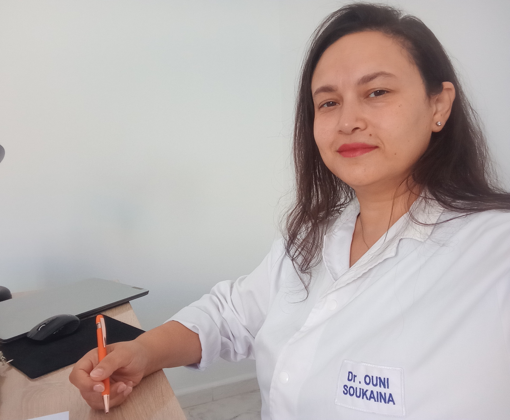
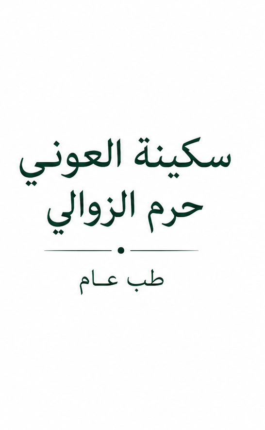
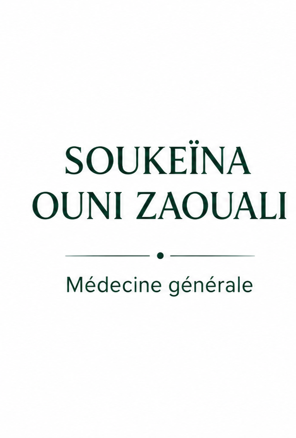
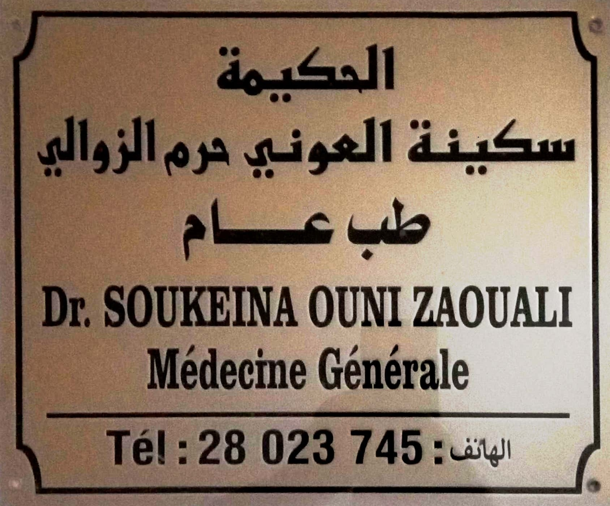

في عيادة الحكيمة سكينة العوني حرم الزوالي بمنزل إسماعيل، نجمع بين الدقة الطبية والإنصات الإنساني الدافئ للعناية بصحة الأطفال، البالغين، وكبار السن، مع متابعة دقيقة للأمراض المزمنة وزيارات منزلية مخصصة.

الحكيمة سكينة العوني حرم الزوالي
دكتورة في الطب العام ورعاية المسنين
رمز العناية العائلية
طبيبة تهتم بكل العائلة من الطفولة إلى الشيخوخة بعناية وحسن تصرف.


يجسد شعار العيادة حرف S متداخلاً مع سماعة الطبيب على شكل قلب ينبض بالحياة، ليحتضن جميع أفراد الأسرة: الطفل، الوالدين، وكبار السن.
تأسست عيادة الحكيمة سكينة العوني حرم الزوالي لتكون فضاءً صحياً حديثاً ومريحاً يضع المريض وعائلته في صدارة الاهتمام. نؤمن بأن الطب العام هو الركيزة الأولى للوقاية والحيوية المستدامة، من خلال التشخيص المبكر، التثقيف الصحي، والمتابعة الشخصية المنتظمة.
بفضل التجهيزات التشخيصية المتوفرة داخل العيادة (تخطيط القلب، قياس الضغط المتنقل، الفحص بالصدى) والخبرة الخاصة في مرافقة كبار السن، نضمن لكم رعاية متكاملة تغنيكم عن التنقلات المرهقة.
وقت كافٍ لكل مريض لفهم حالته الصحية والنفسية بعمق.
فحوصات تقنية فورية في العيادة لتسريع خطة العلاج.
التنقل إلى منازل المرضى وكبار السن عند الحاجة.
نقدم باقة شاملة من الاستشارات الطبية، المتابعة الوقائية، والفحوصات التقنية الدقيقة في بيئة صحية مريحة.
استشارات طبية شاملة للأمراض الحادة والموسمية، الفحوصات الدورية الوقائية، الشهادات الطبية، ومرافقة صحة الأطفال والبالغين وكبار السن.
مرافقة طبية وإنسانية متخصصة لكبار السن، تقييم الاستقلالية والذاكرة، تعديل الأدوية، وزيارات طبية منزلية في منزل إسماعيل والمناطق المجاورة ببنزرت.
بروتوكولات متابعة منتظمة ودقيقة لتحقيق التوازن العلاجي والوقاية من المضاعفات: ارتفاع ضغط الدم، السكري، الربو وأمراض الجهاز التنفسي، وأمراض القلب والشرايين.
تجهيزات تشخيصية متكاملة داخل العيادة: تخطيط القلب (ECG)، قياس ضغط الدم المتنقل لمدة 24 ساعة (MAPA)، الفحص بالصدى (Échographie)، والجراحة الصغرى وتقطيب الجروح.
لأن كبار السن يحتاجون إلى رعاية تجمع بين الخبرة الطبية والصبر والإصغاء، نوفر تقييماً شاملاً للحالة الصحية، مراجعة التفاعلات الدوائية، والوقاية من السقوط، مع إمكانية الفحص في المنزل بمنزل إسماعيل وبنزرت.
يسعدنا استقبالكم في عيادتنا بمنزل إسماعيل، بنزرت. يمكنكم التعرف بسهولة على مدخل العيادة من خلال اللوحة التعريفية.

اللوحة التعريفية بمدخل العيادة
منزل إسماعيل، بنزرت 7011 — الهاتف: 745 023 28
يُفضل الاتصال مسبقاً لتحديد موعدكم
املأ البيانات التالية وسنتواصل معكم لتأكيد الموعد في أقرب وقت، أو اتصلوا مباشرة على الرقم 28 023 745.